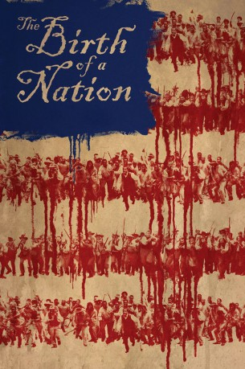

#6044 The Birth of a Nation: Aufstand zur Freiheit
Alternativ: The Birth of a Nation
 
 IMDB-Wertung: 6.2 / 10
IMDB-Wertung: 6.2 / 10  Metascore: 0
Metascore: 0 
Der Süden der Vereinigten Staaten von Amerika, 30 Jahre vor dem Bürgerkrieg: Nat Turner (Nate Parker) ist ein gebildeter Prediger, der als Sklave unter Samuel Turner (Armie Hammer) lebt. Der Sklavenhalter steht kurz vor dem Bankrott, als er ein Angebot erhält, das viel Geld verspricht: Nats Fertigkeiten als Prediger sollen dazu missbraucht werden, Sklaven unter Kontrolle zu bekommen, die Widerstand leisten. Der Priester wird zum Handlanger seines eigenen Unterdrückers und muss viele Grausamkeiten ertragen bzw. mitansehen. Es trifft ihn, es trifft seine Freunde und es trifft seine Frau Cherry (Aja Naomi King). Die anhaltenden Demütigungen treiben Nat schließlich zu einer radikalen Entscheidung: Er führt einen Aufstand herbei, in der Hoffnung, endlich allen Sklaven die Freiheit zu ermöglichen.
Jahr: 2016
Dauer: 119 Minuten
FSK: 16
Land: USA Studio: Fox Searchlight PicturesTonspuren: DD5.1 - ,
Untertitel: Deutsch,
Auflösung: 1080p (1920x800) Größe: 10444 MB
Genre: Drama, Geschichte, Biographie
Regisseur: Nate Parker
Drehbuch: M.J. Offen
Soundtrack:
Darsteller:
 Nate Parker als Nat Turner
Nate Parker als Nat Turner Armie Hammer als Samuel Turner
Armie Hammer als Samuel Turner Penelope Ann Miller als Elizabeth Turner
Penelope Ann Miller als Elizabeth Turner Jackie Earle Haley als Raymond Cobb
Jackie Earle Haley als Raymond Cobb Mark Boone Junior als Reverend Walthall
Mark Boone Junior als Reverend Walthall Colman Domingo als Hark
Colman Domingo als Hark Aunjanue Ellis als Nancy
Aunjanue Ellis als Nancy- Dwight Henry als Isaac Turner
- Aja Naomi King als Cherry
 Esther Scott als Bridget
Esther Scott als Bridget Roger Guenveur Smith als Isaiah
Roger Guenveur Smith als Isaiah Gabrielle Union als Esther
Gabrielle Union als Esther- Tony Espinosa als Young Nat Turner
 Jayson Warner Smith als Earl Fowler
Jayson Warner Smith als Earl Fowler Jason Stuart als Joseph Randall
Jason Stuart als Joseph Randall- Chiké Okonkwo als Will
- Katie Garfield als Catherine Turner
- Kai Norris als Jasper
- Chris Greene als Nelson
 Kelvin Harrison Jr. als Simon
Kelvin Harrison Jr. als Simon Steve Coulter als General Childs
Steve Coulter als General Childs- Jeryl Prescott als Janice
- Justin Randell Brooke als Guiles Reese
 Dominic Bogart als Hank Fowler
Dominic Bogart als Hank Fowler- Allen Phoenix als Abner
 Aiden Flowers als Young John Clarke
Aiden Flowers als Young John Clarke Dane Davenport als John Clarke
Dane Davenport als John Clarke- Ryan Mulkay als Jesse
 Danny Vinson als Benjamin Turner
Danny Vinson als Benjamin Turner Tom Proctor als E.T. Brantley
Tom Proctor als E.T. Brantley- Brad Schmidt als Lieutenant Akers
 William Mark McCullough als White Man
William Mark McCullough als White Man- Elijah C. Walker als Rebel Boy #2
 Alkoya Brunson als Young Hark
Alkoya Brunson als Young Hark Cullen Moss als Man
Cullen Moss als Man- Griffin Freeman als Young Samuel Turner
- Tim McAdams als Rebel Slave #2
- Scott Loeser als Armed White #3
 Greg Sproles als Armed White #4
Greg Sproles als Armed White #4- Kemuel Crossty als Rebel Man
- Gregory Black als Rebel Slave , uncredited
 Bradley Bowen als Militia General , uncredited
Bradley Bowen als Militia General , uncredited- Victoria Budkey als Lynch Mob , uncredited
- Sheila Cochran als General Child's Wife , uncredited
- Nicole Davis als Angel , uncredited
 Shannon Edwards als Farmer , uncredited
Shannon Edwards als Farmer , uncredited- Kimberly Hester Huffstetler als Lynch Mob , uncredited
- Marcus Jenkins als Rebel , uncredited
- Richard Jones als Plantation Owner , uncredited
- Shane Kelly als Slave Owner , uncredited
Datei: X:\2016(A-F)\Birth of a Nation Aufstand zur Freiheit, The (2016, FSK16, 1920x800).mkv seit 25.04.2017
Festplatte: HD 2016(A-Z)
 Es gibt insgesamt 147 Filme in der Gruppe '2016(A-F)'
Es gibt insgesamt 147 Filme in der Gruppe '2016(A-F)'